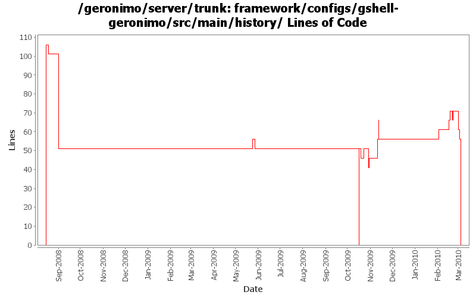

[root]/framework/configs/gshell-geronimo/src/main/history

| Author | Changes | Lines of Code | Lines per Change |
|---|---|---|---|
| Totals | 27 (100.0%) | 360 (100.0%) | 13.3 |
| djencks | 10 (37.0%) | 303 (84.2%) | 30.3 |
| rickmcguire | 4 (14.8%) | 25 (6.9%) | 6.2 |
| gawor | 10 (37.0%) | 20 (5.6%) | 2.0 |
| xuhaihong | 2 (7.4%) | 11 (3.1%) | 5.5 |
| dwoods | 1 (3.7%) | 1 (0.3%) | 1.0 |
GERONIMO-5169: Remove some GShell modules
0 lines of code changed in 1 file:
GERONIMO-5165: Litte extender that scans for META-INF/services/java.sql.Driver resources and installs the drivers
0 lines of code changed in 1 file:
switch to asm 3.2 - framework builds and starts now
5 lines of code changed in 1 file:
use felix obr api instead of osgi api
0 lines of code changed in 1 file:
update dependencies for obr addition
5 lines of code changed in 1 file:
GERONIMO-4931 prepare for amq under blueprint by moving to latest karaf using aries blueprint
0 lines of code changed in 1 file:
updates to get trunk building again
5 lines of code changed in 1 file:
GERONIMO-4971 include obr repository.xml in every plugin, and install it into an obr instance when the plugin is installed. Also update the aries plugin and build it. The framework geronimo-obr module is written by Jarek Gawor with minor changes
6 lines of code changed in 1 file:
GERONIMO-5057 Use those xmlbeans generated by JAVA EE 6 schema files
6 lines of code changed in 1 file:
undo 835435
0 lines of code changed in 1 file:
Fixes to adjust to the logging updates
10 lines of code changed in 1 file:
more xbeans cleanup for the tomcat plugin
10 lines of code changed in 1 file:
don't need commons-cli bundle, latest release is osgi-ified. Straighten out a couple dependencies. Tests fail but builds through to tomcat clustering for me
5 lines of code changed in 1 file:
add bin/geronimo and bin/client that work just like before. bin/karaf will only start the karaf framework
5 lines of code changed in 1 file:
generate much saner dependency information and reduce number of packages exported via system bundle in car maven plugin
0 lines of code changed in 1 file:
bunch of logging improvements
5 lines of code changed in 1 file:
Fix dependency history so it's up-to-date
0 lines of code changed in 1 file:
GERONIMO-4916 step 2 move sandbox osgi framework into trunk
51 lines of code changed in 1 file:
GERONIMO-4916 step 1 remove old framwork
0 lines of code changed in 1 file:
update other XML files with embedded versions from 2.2-SNAPSHOT to 3.0-SNAPSHOT
1 lines of code changed in 1 file:
GERONIMO-4692 sort dependencies.xml, except for connector-1_6
47 lines of code changed in 1 file:
GERONIMO-4684, GERONIMO-4685 Use our tomcat build, configure tomcat using server.xml. Also includes some spec jar updates including using our jaxb spec jar
51 lines of code changed in 1 file:
XBEAN-128 hopefully fix the dependency.xml files after the last shuffle of shading adventures
0 lines of code changed in 1 file:
GERONIMO-4644 Update XBean version to 3.6 SNAPSHOT
5 lines of code changed in 1 file:
GERONIMO-4239, sort of. Use transitive depenedencies in c-m-p everywhere. This may break stuff.... let me know
37 lines of code changed in 1 file:
there was no dependency on jsr173_api
0 lines of code changed in 1 file:
GERONIMO-4248 Add dependency history files
106 lines of code changed in 1 file: